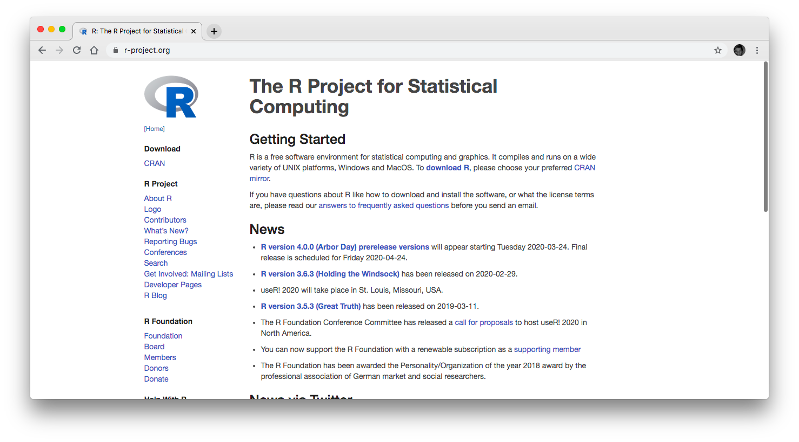

Datenanalyse: Eye-tracking 2020/2021
2021-01-19
Kapitel 1 Willkommen
Da wir uns leider in diesem Jahr erstmal nicht persönlich treffen können, habe ich hier eine kleine Übersicht zu den verwendeten R-Befehlen erstellt.
1.1 Was braucht man dafür?
Dafür muss man auf seinem Rechner R und Rstudio installieren (beide sollten auf Windows, Mac und Linux laufen).
- R frei verfügbare Software https://www.r-project.org/
 R ist eine freie Programmiersprache zur statistischen Datenanalyse und Erstellung von Grafiken. Sie kann auch als Skriptsprache benutzt werden, um einfache Skripte und Programme zu schreiben. R ist vor allem in der Wissenschaft weit verbreitet und löst hier zunehmend SPSS ab. R bietet viele Methoden und Pakete zu statistischen Auswertung und Datendarstellung, die ständig in open-source weiterentwickelt werden, es steht kostenlos zur Verfügung und kann auf jeder Plattform (Windows, Mac, Linux) laufen. R besteht aus 3 Hauptfenstern: (1) Konsole, um direkt Befehle einzugeben, (2) Editor, um eine Abfolge an Befehlen zu speichern und auszuführen, (3) Grafikfenster
- RStudio https://www.rstudio.com/products/rstudio/download Es gibt verschiedene Möglichkeiten mit R zu arbeiten. Wir werden die grafische Oberfläche, die RStudio bietet, nutzen. RStudio bietet eine gut handhabe Oberfläche, viel Unterstützung und viele integrierte Apps (Shiny, Markdown, Bookdown …), die auf R zurückgreifen. Unterschiedliche Editoren zur Bearbeitung von R Dateien sind:
- RStudio (für die gemeinsame Datenauswertung im Praktikum empfohlen)
- Notepad++ (Windows)
- Textwrangler
- \(\dots\)
RStudio Logo
 So sieht RStudio ohne Inhalt oder Daten aus.
So sieht RStudio ohne Inhalt oder Daten aus.
Die 4 Hauptfenster von RStudio
In der Standarddarstellung befindet sich oben links der Code Editor, oben rechts können sie Workspace und History ansehen, unten links befindet sich die R Console, in der Sie den Code direkt eingeben können und unten rechts lassen sich unter anderem Plots und Files anzeigen. Schauen Sie sich die verschiedenen Möglichkeiten an, die die verschiedenen Tabs in den Ecken bieten.
Skript
Das Skript enthält eine Sammlung von Befehlen. Diese können auch direkt über Konsole ausgeführt werden. Es empfiehlt sich jedoch sehr, diese im Code Editor zu speichern, um später noch einmal darauf zugreifen zu können.
Workspace
Der Workspace enthält Sammlung von Objekten, die in einer Session erstellt wurden. Diese kann explizit gespeichert werden, um die einzelnen Objekte noch einmal neu zu laden.
So sieht Rstudio mit ein bischen mehr Inhalt aus.

RStudio mit Datensatz und grafischer Darstellung eines Datensatzes
- oben links steht der Code, der gespeichert und auch aus dem Editor ausgeführt werden kann. (Mac: Markierung des auszuführenden Codes und dann CMD + Enter)
- unten links man kannn den auszuführenden Code auch direkt unten in das Konsolenfenster eingeben. Dann wird dieser allerdings nicht gespeichert. Es wird empfohlen, Code der erstmal nur ausprobiert wird, direkt in das Konsolenfenster einzutragen. Wenn der Code das korrekte Ergebnis liefert, sollte er im Editor in einem Skript gespeichert werden.
- oben rechts lassen sich History der eingegebenen Befehle und auch die Inhalte des Workspace anzeigen
- unten rechts kann man sich die geladenen Pakete für R, sowie die verschiedenen erstellten Grafiken anzeigen lassen
Die Anordnung der Fenster lassen sich über RStudio > Preferences und dann Pane Layout ändern. Über Preferences können Sie sich generell anzeigen lassen, welche Änderungen Sie u.a. bei der Anzeige vornehmen können bzw.~wollen.
- Shiny App
Das ist eine App, die in RStudio integriert ist und die deskriptive Daten mit R bildlich und interaktiv veranschaulichen kann und auch veröffentlicht. Wenn man sich einmal ein bisschen mit R auseinandergesetzt hat, kann man sich mit Shiny weiter “austoben”.
Beispiel des Screenshots einer Shiny App, die interaktiv die Normalverteilung einer übergebenen Anzahl beobachteter Werte anzeigt.
1.2 Einleitung: Datentypen in der Linguistik
Qualitative Daten Nicht-numerische, oft verschriftlichte oder in audiovisueller Form vorliegende Daten. Verwendung häufig explorativ und hypothesengenerierend. (e.g., Interviews)
Quantitative Daten Numerische (bzw. in numerischer Form überführte) Daten, die mit dem Ziel der Überprüfung von Hypothesen und Theorien erhoben werden
1.3 Population und Stichprobe
In der psycholinguistischen Forschung werden Daten in einer kontrollierten Umgebung (Experiment) erhoben, die Aussagen für die Gesamtpopulation zu einer bestimmten linguistischen Fragestellung machen zu können.
Dabei wird eine kleine Gruppe der Population (Stichprobe) in einem Experiment getestet. Bestimmte Daten dieser Stichprobe werden erhoben und anschliessend die Ergebnisse dieser Daten auf die Gesamtpopulation projiziert. Die erhobenen Daten der Stichprobe müssen erst in deskriptive statistische Kennwerte umgewandelt werden und anschliessend mittels statistischer Verfahren Hypothesen geprüft werden, um Aussagen über die Gesamtpopulation machen zu können.
1.4 Deskriptive Statistik und Inferenzstatistik
Deskriptive Statistik übersichtliche Darstellung der erhobenen Daten einer Stichprobe in Form statistischer Kennwerte (Mittelwerte, Streuung, Verteilung, Grafiken)
Inferenzstatistik Statistische Verfahren, die es ermöglichen Rückschlüsse aus den Daten auf die Gesamtpopulation zu ziehen, um Schätzungen für Populationswerte zu berechnen oder experimentelle Hypothesen zu testen.
1.5 R als Taschenrechner: Beispiele
Um sich erstmal mit R vertraut zu machen, kann man R erstmal als Taschenrechner einsetzen. Dabei ist die Anwendung recht assoziativ und kann wie folgt eingesetzt werden.
Probieren Sie diese Beispiele erstmal selbst zuerst in Ihrem Terminal und dann aus dem Editor heraus aus!
Addition +
5 + 7## [1] 12Subtraktion -
325 - 18## [1] 307Multiplikation *
43 * 21## [1] 903Division /
442 / 13## [1] 34Exponent ^
32^2## [1] 10241.6 Einige vordefinierte Beispielfunktionen
Funktionen können auch sehr einfach in R selbst geschrieben werden. Dazu kommenw wir später auch noch. Man muss allerdings nicht alles neu erfinden, besonders weil R auch viele Funktionen vordefiniert mitbringt.
Die Syntax ist relativ simpel. Die Funktion hat einen eigenen Namen und die übergebenen Argumente, mit denen die Funktion Berechnungen durchführt werden in der Klammer nach dem Funktionsnamen übergeben.
Unten sind ein paar Beispiele für frequente leicht nachvollziehbare Funktionen aufgelistet.
Summe sum() - Bildung der Summe, der übergebenen Argumente:
sum(3,45,12,34)## [1] 94Wurzel sqrt() - Bildung der Wurzel von einem übergebenen Argument:
sqrt(1024)## [1] 32Minimum min() - Ermittlung der kleinsten Zahl aus einer Liste von übergebenen Werten:
min(43,24,11,23,76,14,56,99,12)## [1] 11Maximum max() - Ermittlung der höchsten Zahl aus einer Liste von übergebenen Werten:
max(43,24,11,23,76,14,56,99,12)## [1] 99Absoluter Wert (Betrag) abs() - Ermittlung des absoluten Betrags aus einem Wert:
abs(-25)## [1] 25Aneinanderreihung concatenate c() verbindet in Klammern stehende Zahlen zu einer Liste
c(2,6,7)List ls()
- listet alle Elemente im aktuellen Workspace auf
ls()Gib Pfad des aktuellen working directory zurück getwd()
- Gibt Verzeichnis des aktuellen Workspace aus
getwd()Setze working directory auf folgenden Pfad setwd()
- Setzt den aktuellen Workspace in angegebenes Verzeichnis
setwd(<Pfad>)Lies Datensatz ein read.table()
- liest einen Datensatz in aktuellen Workspace ein
read.table(<file>, header = T)write.table()
- exportiert eine Variable aus aktuellem working directory in die angegebene Dateinamen
write.table(<Variablenname>,file = "")1.7 Vergleichsoperatoren
Hier sind die Beispiele logischer Vergleichsoperatoren. Deren Interpretation gibt entweder TRUE oder FALSE zurück.
gleich ==
- Vergleich ob die Werte beider Ausdrücke identisch sind
- ja: TRUE
- nein: FALSE
4 == 6## [1] FALSEungleich: !=
- Vergleich ob die Werte beider Ausdrücke ungleich sind
- ja sie sind ungleich: TRUE
- nein sie sind gleich: FALSE
4 != 6## [1] TRUEgrößer: >
- ist der Wert links größer als der Wert rechts?
4 > 6## [1] FALSEkleiner: <
- ist der Wert links kleiner als der Wert rechts?
4 < 6## [1] TRUEgrößer gleich: >=
- ist der Wert links größer oder gleich gleich der Wert rechts?
4 >= 6## [1] FALSE4 >= 4## [1] TRUEkleiner gleich: <=
- ist der Wert links kleiner als der Wert rechts?
4 <= 6## [1] TRUE4 <= 4## [1] TRUE1.8 Logische Vergleichsoperatoren
Konjunktion, logisches “Und”: && oder &
- beim logischen Und werden die Werte der beiden Ausdrücke verglichen - nur wenn beide TRUE ergeben, wird der Gesamtausdruck TRUE ergeben
- im unteren Beispiele sind beide Ausdrück TRUE
4 <= 4 & 4 >= 4## [1] TRUEDisjunktion, logisches “oder”: || oder |
- beim logischen Oder reicht es, wenn ein zu vergleichender Ausdruck TRUE ist, um den gesamten Ausdruck TRUE zu machen.
4 < 6 || 5 > 8## [1] TRUENegation: !
- bei der Negation wird der Wahrheitsgehalt eines Ausdruckes umgekehrt.
!(4 < 6 || 5 > 8)## [1] FALSE1.9 Variablen in R
Verschiedene Werte oder Ergebnisse einer Berechnung können leicht in Variablen (Platzhalter) gespeichert werden. Diese Variablen müssen in R mit einem Buchstaben beginnen. Die Zuweisung von Werten in eine Variable erfolgt entweder mit einem Pfeil <- oder mit einem simplen = (beides ohne Unterschied möglich):
a <- 15
b = 23
ab = c(a,b)
ab## [1] 15 231.10 Hilfefunktionen
Mit der Hilfefunktion ? lässt sich zu jeder R-Funktion eine hilfreiche Beschreibung anzeigen. Schreiben Sie einfach das ? direkt vor die Funktion zu der Sie mehr erfahren wollen und R öffnet ein Hilfsfenster. Probieren Sie es einmal aus und schreiben:
?sum
Mit ?sum können Sie sich die Informationen zum sum Befehl anzeigen lassen. Meist werden am Ende der Beschreibung auch Beispiele zur Benutzung angezeigt.
Alternativ können Sie auch den help(
?sum
help(sum)1.11 Pakete Laden
Pakete sind eine Sammlung verschiedener Funktionen zu einem Thema.
# installiert das Paket
install.packages("tidyverse")
# lädt das Paket
library(tidyverse)